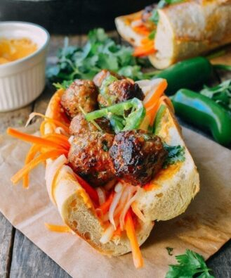

Spicy Meatball Banh Mi

Ingredients
Carrot Daikon Salad:
- 2 medium carrots (julienned)
- 1 cup daikon radish (julienned)
- 2 tablespoons sugar
- ½ teaspoon salt>
- 3 tablespoons rice wine vinegar
- 2 teaspoons sesame oil
Meatballs:
- 1 pound ground pork (450g)
- 2 tablespoons chopped cilantro or basil
- 1 scallion (chopped)
- 3 cloves garlic (minced)
- 1 tablespoon fish sauce
- 1 tablespoon Sriracha
- 2 teaspoons sugar
- salt and pepper (to taste)
- 1 tablespoon cornstarch
To assemble the sandwiches:
- 1 tablespoon oil
- 1/4 cup mayonnaise
- 2 teaspoons Sriracha
- 1 baguette (cut into 4 equal pieces and lightly toasted)
- 1 jalapeno (seeded and thinly sliced)
- fresh cilantro
Instructions
- Start by preparing the carrot and daikon. Add the julienned carrots and daikon to a large bowl and toss in the sugar, salt, vinegar and sesame oil. Set aside for 1 hour, stirring occasionally.
- While that's going, thoroughly combine all the meatball ingredients in a bowl, and form into meatballs (you should get about 20). Place the meatballs on a parchment lined baking sheet, and transfer to the freezer for 20 minutes. After the meatballs have been chilled, heat a tablespoon of oil in a cast iron or nonstick skillet over medium high heat. Fry the meatballs until browned on all sides and cooked through.
- In a separate bowl, combine the mayonnaise and Sriracha. Open up each piece of bread, and spread the Sriracha mayonnaise on each side. Fill with the pickled carrots and daikon, cooked meatballs, jalapenos, and cilantro. Serve!
Nutrition
Calories: 677kcal | Carbohydrates: 47g | Protein: 26g | Fat: 42g | Saturated Fat: 12g | Cholesterol: 88mg | Sodium: 947mg | Potassium: 580mg | Fiber: 3g | Sugar: 11g | Vitamin A: 5175IU | Vitamin C: 18.3mg | Calcium: 87mg | Iron: 3mg